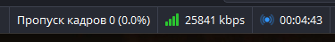
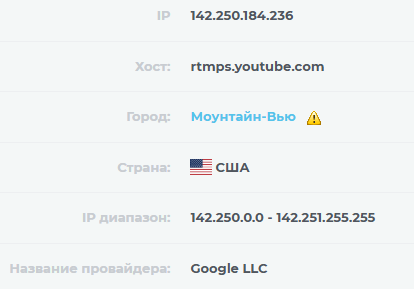

Эта - подразумевал из названия темы (Сборка YTDisBystro на основе Zapret)
А моя проблема такая - с момента блокировки ютуба, я использовал goodbyedpi и все было хорошо, но последние 3-4 недели все сходится на вот такую картинку:
{kind=link}
- goodbyedpi не спасает (хотя 1 раз я удалил, скачал ту же версию и на 1 день норм было), потом снова как на скрине.
- антизапрет то же не спасает, результат как на скрине.
- впн амнезия:
а) установил в ротуер - результат как на скрине (+ загружал маршруты, около 500-600 ip’шников)
б) установил на винду - все ок, но после того как в настройках OBS в ручную выбрал IP адрес, который выдал мне впн
Видимо мне не повезло с провайдером (Дом.ру), потому что у некоторых достаточно goodbyedpi запустить а некоторым и goodbyedpi не нужен что бы стримить.
С любым видом обхода (goodbyedpi, антизапрет, впн) все работает, проблем нет. Одна проблема - не хочет OBS работать.
А какой протокол - RTMP или RTMPS и какой сервер ютуба выбран для получения потока?
Использую 3 или 4 RTMP. Сервер ? Где это посмотреть ?
{kind=link}
И зачем? Когда есть нормально работающий 2-й, Backup YouTube Ingest Server. RTMP - устаревший протокол, им давно никто не пользуется.
Плюс видеопоток пускать через впн или прокси - так себе идея. Я бы даже сказал, очень плохая.
как раз после блокировки ютуба первые два - вообще перестали работать (пишет нет связи), а вторые два работали вместе с goodbyedpi до недавнего момента.
Насчет стрим через впн, знаю что плохо но выхода нет. других вариантов просто нет
ps. не знаю как другие, я да же сюда могу заходить только через впн.
Другие нормально заходят или с Bystro или Censor Tracker с настройкой проксирования только этого сайта и отключения всего остального.
Конфиги zapret или этой сборки не поддерживают дурение RTMP(S) но такое, в принципе, возможно.
Так что отвечая на ваш вопрос - нет, эта сборка вам не поможет нормально стримить. Возможно, у вас сервера RTMPS ютуба вообще забанены по IP, кто знает. У Домру жестить в порядке вещей. С провайдером вам действительно не повезло.
Поток на ютуб теперь пускают через рестриминговые платформы.
Есть примеры ?
А как то можно узнать Ip адреса этих RTMP серверов и добавить эти ip в список обхода ?
Похоже, такие
Спойлер
rtmps.youtube.com
upload.youtube.com
Но сам пока не проверял и в какой именно блэклист их добавлять тоже не знаю.
Именно, не повезло. У них вечно какие-то проблемы с 21 октября. Сам лично тоже наблюдаю рандомные затыки в чем угодно - Discord, онлайн-игры, сайты покрытые Cloudflare, Avito/VK.
В техподдержке провайдера ответили, что им известно о проблемах и сроки исправления неизвестны.
Не уверен что как-то может быть связано, но мало ли.
добавил их в списки связанные с ютубом. Так же в OBS вернул основные сервера а творческой студии, где создаю трансляцию, там напротив URL трансляции нажал на замочек (данные зашифрованные). Адрес стал rtmps://a.rtmps.youtube.com/.
Вообщем тыкался тыкался, на 16й запуск поток с ходу идет без потери кадров.

5 мин повисел и офнул, завтра проверю подольше, если конечно запустится. А то бывает я запускаю тестовый приват-стрим - ОК, запускаю обычный публичный с игрой - тухляк.
ps. пытался через эти адреса выявить ip, что бы их то же добавить но там вот такое выдает

Я да же до ТП не могу дойти. Все вопросы про ютуб - отвечает бот а в чате операторы кидают шаблон что это гугл виноват и закрывают чат. Да же не знаю, как на них еще можно надавить, зато с 1 ноября тариф подорожает.
Ага, их там несколько под разными буквами вроде. Домен без буквы впереди обрабатывет их все.
IP для a - 74.125.205.134 Выявляется простым пингом. И да, он в сша И добавлять IP смысла нет - программа их обрабатывает с ключем ipset, здесь такого нет.
я не так сильно подкован в технической части. Почти это для меня все темный лес… Могу побыть подопытным, если хотите 
Но запасной вариант я для себя нашел, рестрим за 400р в месяц 
Я еще не научился настраивать дурение протоколов и в ближайшее время не планирую )
Может, если вернусь к стримингу - понадобится. Или не понадобится, у меня ж не Домру. Но пока и так все хорошо
А ты на какие темы ведешь стримы? Я бы заглянул на огонек, если там конечно не вебкам 
Если на заднем фоне вебкама будет листок с единственно работающими настройками ytdisbystro, думаю народ не остановит вебкам, только придется смотреть вприщур и одним глазом)
АСМР стримы с лизанием микрофонов в форме ушей, я надеюсь? 
го стриминг по настраиванию дурения протоколов
Судя по пингу Финляндия, может быть Питер.
{kind=link}
В общем, внес rtmps.youtube.com в myblacklist.txt в Быстро 1.5 и все полетело, битрейт на полную, пропуск кадров - 0.
Сервер в OBS - Backup YouTube Ingest Server
Дурение протокола не понадобилось )
А без запрета нет? Твой провайдер блочит поток по протоколу на сервера ютуба тоже?
Блочит адрес сервера по SNI похоже. Без запрета нет - сначало долгое соединение, потом красный квадрат в ОБС и пропуск кадров (всех).